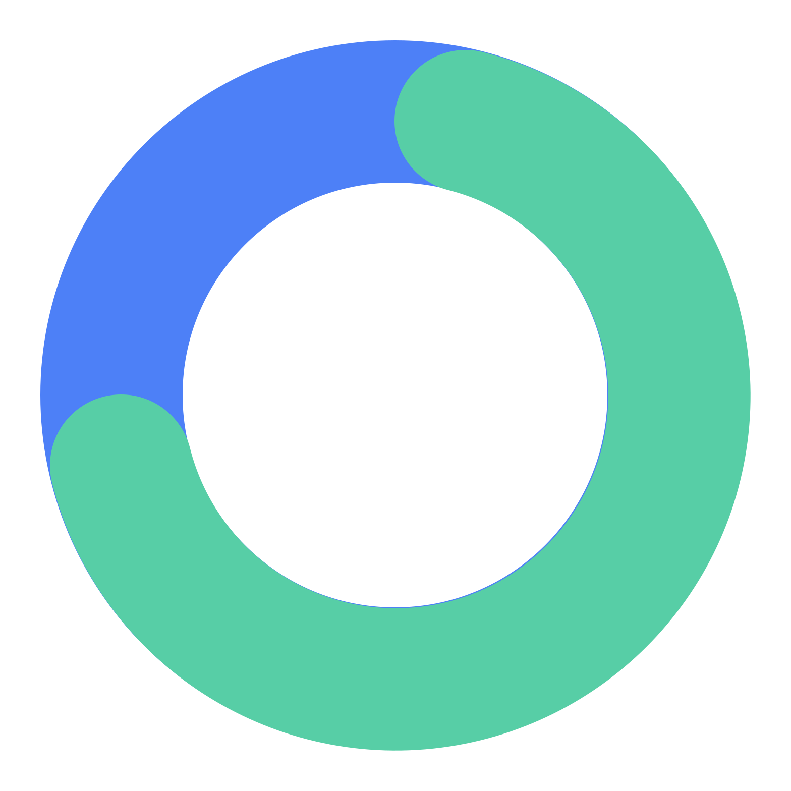

OAK K VPN
တစ်ခုချင်းစီကို နှိပ်ပြီး ပြန်ကြည့်နိုင်ပါတယ်။ ကြိုက်တာရွေးပြီး နံပါတ်ကို chat မှာ ပြောပါ၊ app ထဲ တိုက်ရိုက်ထည့်ပေးပါမယ်။
ရွေးထားတာ မရှိသေးပါ
သင့်စက်မှာ “motion လျှော့ရန်” ဖွင့်ထားလို့ animation တွေကို အချိန်တိုနဲ့ပဲ ပြထားပါတယ်။